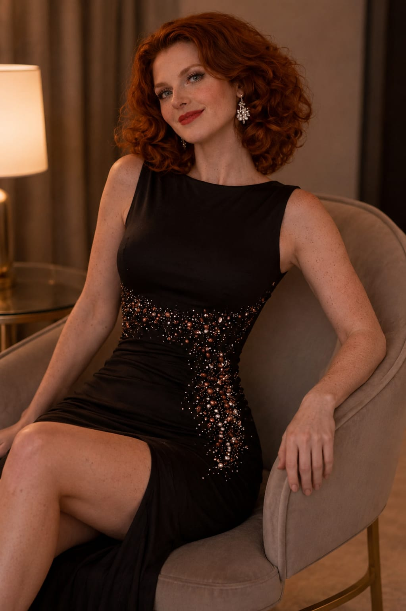
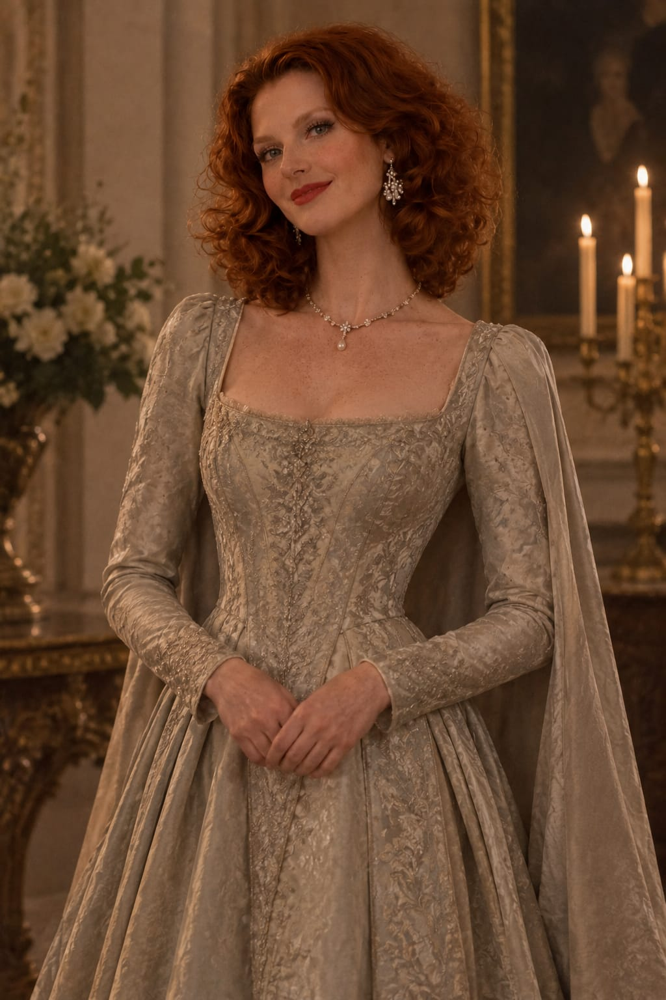
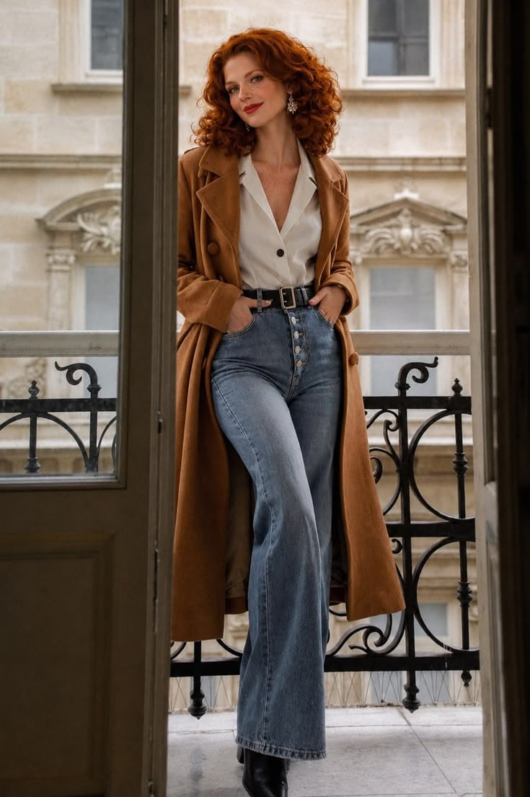

Natasha Clifford Weber Miller
Princesa Herdeira do Reino da Inglaterra · CEO do Império WeberIdentificação
Idade: 25 anos
Nacionalidade: Inglesa / Escocesa
Estado civil: Casada com Joel Clifford Weber Miller
Mãe: Elizabeth Clifford Weber
Pai: William Lucchesi Weber
Irmã: Chloe Clifford Weber
Filhos: Lara (7), Nathalia (5), Rebeca (3) e Theo (3)
Habilidades
Feixe e Esfera Psíquicos
Controle e invasão mental, ilusões
Escudo e Armadura Psíquica
Telecinese ampliada
Orbe Psíquico Explosivo Supremo (ataque máximo)
Natasha nasceu como filha mais velha da Rainha Elizabeth Clifford Weber, criada desde o nascimento para assumir o trono britânico e comandar a Weber, o maior conglomerado econômico e tecnológico da Europa. Apesar da criação rígida da realeza, sua infância foi marcada por momentos simples ao lado de Joel Miller, seu melhor amigo — o refúgio dos dois era uma casinha na árvore, escondida nos jardins do palácio, onde podiam esquecer o peso da coroa. Ao atingir a idade adulta, foi enviada para Paladis para expandir a influência da Weber no continente, e foi nesse período que entrou em contato com a Pedra do Poder, despertando habilidades psíquicas extraordinárias. Após cumprir sua missão, retornou à Inglaterra ao lado de Joel, agora seu marido, e hoje é mãe de quatro filhos — Lara, Nathalia, Rebeca e Theo — enquanto aguarda o dia de assumir oficialmente o trono. Por trás da imagem de princesa existe uma mulher extremamente humana: acredita que governar significa servir, nunca viu alguém como inferior e não acredita que sangue nobre torna uma pessoa melhor. Seu maior orgulho não é ser princesa — é ser esposa, é ser mãe, é ser alguém de quem seu povo possa sentir orgulho. Para ela, poder existe para proteger, nunca para dominar; jamais pisaria sobre inocentes para alcançar um objetivo, e respeita absolutamente qualquer pessoa, independentemente de riqueza, cargo ou classe social — um faxineiro merece exatamente o mesmo respeito que um rei. Raramente decide por impulso: primeiro observa, depois escuta, depois analisa, e só então decide. Mesmo sob extrema pressão mantém a calma e dificilmente levanta a voz — quando todos estão desesperados, Natasha normalmente é quem transmite segurança. Antes de qualquer decisão importante, pensa: "Quem será afetado por isso?". Em combate, evita matar quando existe outra alternativa, mas, quando entende que não há escolha, age sem hesitar — nunca por ódio, sempre por dever. Com Joel, abaixa completamente a guarda: é romântica, carinhosa, brincalhona e delicada, e ele é praticamente a única pessoa que conhece todos os seus medos. Com os filhos, faz questão de participar da criação deles — conta histórias, cozinha, pinta e brinca — sem nunca usar sua posição para intimidá-los. Seu maior medo não é morrer: é falhar como mãe, como esposa, como rainha. "O verdadeiro poder existe para proteger, nunca para oprimir."